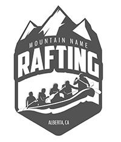
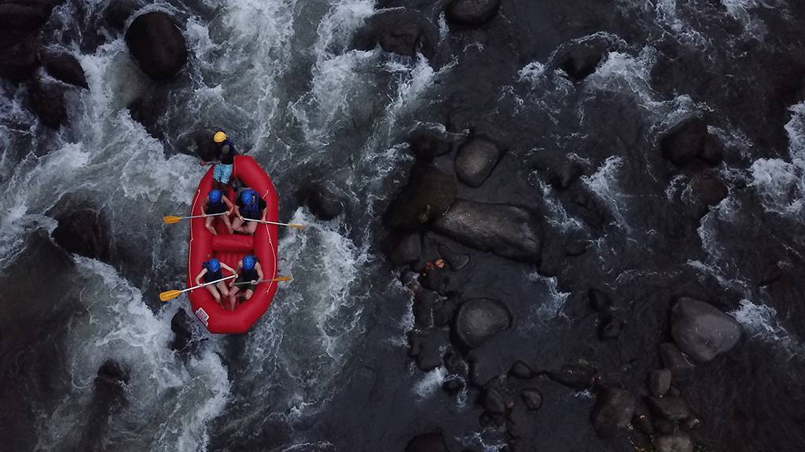
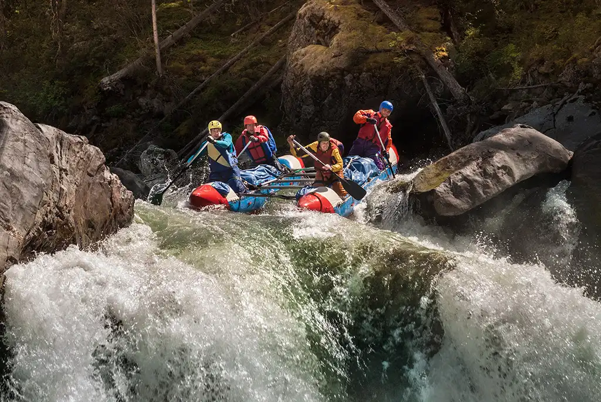
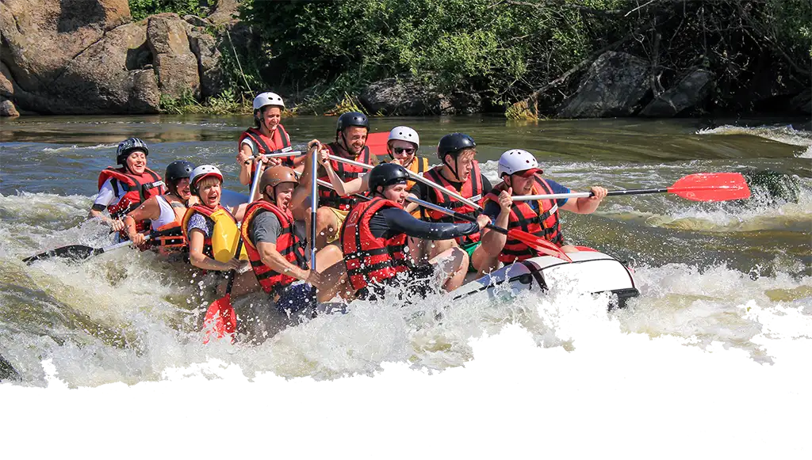
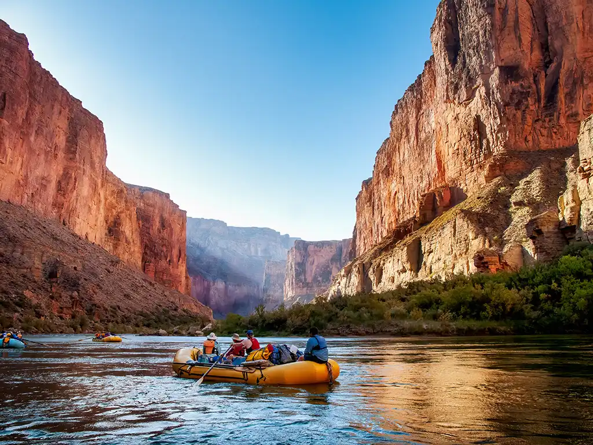
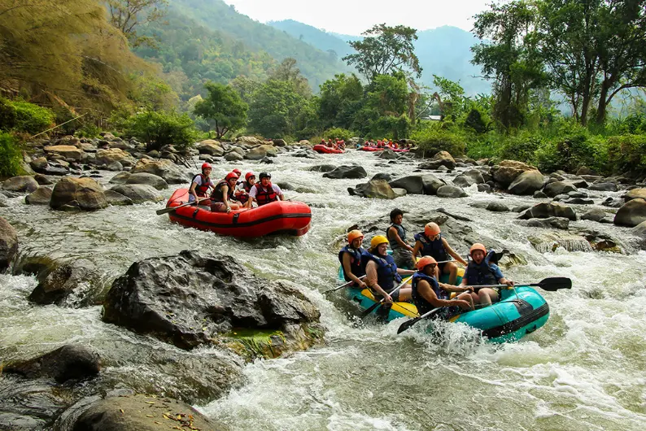
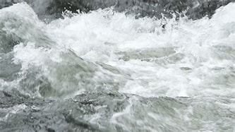

Our aim is to make your experience out on the water one to remember. Making your day the white water way!

Urubamba White Water Rafting
Our aim is to make your experience out on the water one to remember. Making your day the white water way!
We are a proud family-founded and family-run company
focused on bringing families and friends together on
an adventure that takes you out of your normal day-to-day
life and gives you the chance to truly experience this
wonderful world.
Our founder owned a piece of land that happened to have
a river running through it. While growing up, his family
always went rafting down the river when they needed a
break from normal life.
Later in his life, Brent wanted to share that same joy
he had as a child with other families and friends.
Little did he know that Urubamba would become a huge
success, bringing everyone together while reconnecting
with their inner child and nature.





